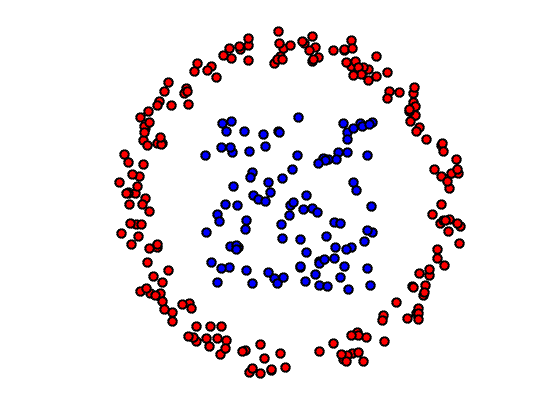
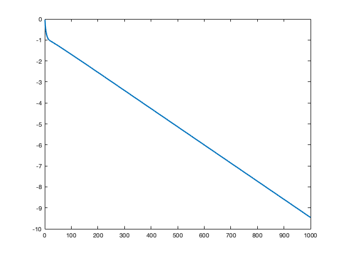
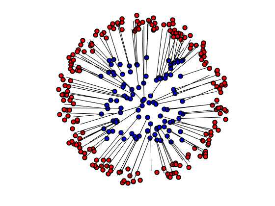
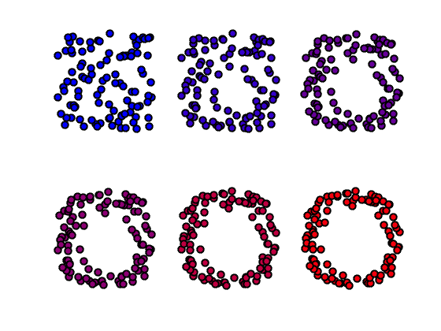
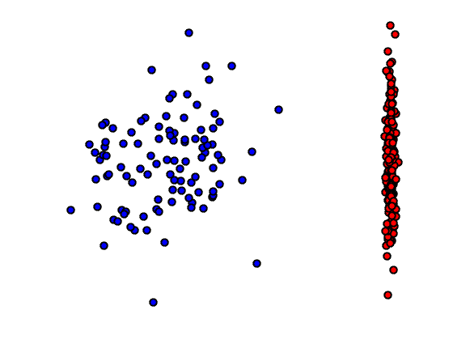
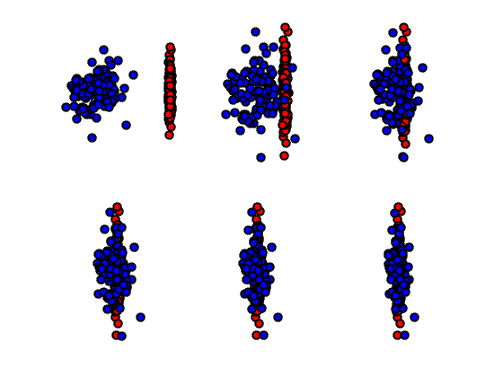

Advanced Topics on Sinkhorn Algorithm
This numerical tour explore several extensions of the basic Sinkhorn method.
Contents
Installing toolboxes and setting up the path.
You need to download the following files: signal toolbox and general toolbox.
You need to unzip these toolboxes in your working directory, so that you have toolbox_signal and toolbox_general in your directory.
For Scilab user: you must replace the Matlab comment '%' by its Scilab counterpart '//'.
Recommandation: You should create a text file named for instance numericaltour.sce (in Scilab) or numericaltour.m (in Matlab) to write all the Scilab/Matlab command you want to execute. Then, simply run exec('numericaltour.sce'); (in Scilab) or numericaltour; (in Matlab) to run the commands.
Execute this line only if you are using Matlab.
getd = @(p)path(p,path); % scilab users must *not* execute this
Then you can add the toolboxes to the path.
getd('toolbox_signal/'); getd('toolbox_general/');
Warning: Name is nonexistent or not a directory: /Users/gpeyre/Dropbox/github/numerical-tours/matlab/m_files/toolbox_signal
Log-domain Sinkhorn
For simplicity, we consider uniform distributions on point clouds, so that the associated histograms are \( (a,b) \in \RR^n \times \RR^m\) being constant \(1/n\) and \(1/m\).
n = 100;
m = 200;
d = 2; % Dimension of the clouds.
a = ones(n,1)/n;
b = ones(1,m)/m;
Point clouds \(x\) and \(y\).
x = rand(2,n)-.5; theta = 2*pi*rand(1,m); r = .8 + .2*rand(1,m); y = [cos(theta).*r; sin(theta).*r];
Display of the two clouds.
plotp = @(x,col)plot(x(1,:)', x(2,:)', 'o', 'MarkerSize', 9, 'MarkerEdgeColor', 'k', 'MarkerFaceColor', col, 'LineWidth', 2); clf; hold on; plotp(x, 'b'); plotp(y, 'r'); axis('off'); axis('equal');
Cost matrix \(C_{i,j} = \norm{x_i-y_j}^2\).
distmat = @(x,y)sum(x.^2,1)' + sum(y.^2,1) - 2*x.'*y; C = distmat(x,y);
Sinkhorn algorithm is originally implemented using matrix-vector multipliciation, which is unstable for small epsilon. Here we consider a log-domain implementation, which operates by iteratively updating so-called Kantorovitch dual potentials \( (f,g) \in \RR^n \times \RR^m \).
The update are obtained by regularized c-transform, which reads \[ f_i \leftarrow {\min}_\epsilon^b( C_{i,\cdot} - g ) \] \[ g_j \leftarrow {\min}_\epsilon^a( C_{\cdot,j} - f ), \] where the regularized minimum operator reads \[ {\min}_\epsilon^a(h) \eqdef -\epsilon \log \sum_i a_i e^{-h_i/\epsilon}. \]
mina = @(H,epsilon)-epsilon*log( sum(a .* exp(-H/epsilon),1) ); minb = @(H,epsilon)-epsilon*log( sum(b .* exp(-H/epsilon),2) );
The regularized min operator defined this way is non-stable, but it can be stabilized using the celebrated log-sum-exp trick, wich relies on the fact that for any constant \(c \in \RR\), one has \[ {\min}_\epsilon^a(h+c) = {\min}_\epsilon^a(h) + c, \] and stabilization is achieved using \(c=\min(h)\).
mina = @(H,epsilon)mina(H-min(H,[],1),epsilon) + min(H,[],1); minb = @(H,epsilon)minb(H-min(H,[],2),epsilon) + min(H,[],2);
Value of \(\epsilon\).
epsilon = .01;
Exercice 1: (check the solution) Implement Sinkhorn in log domain.
exo1;
Exercice 2: (check the solution) Study the impact of \(\epsilon\) on the convergence rate of the algorithm.
exo2;
Wasserstein Flow for Matching
We aim at performing a "Lagrangian" gradient (also called Wasserstein flow) descent of Wasserstein distance, in order to perform a non-parametric fitting. This corresponds to minimizing the energy function \[ \Ee(z) \eqdef W_\epsilon\pa{ \frac{1}{n}\sum_i \de_{z_i}, \frac{1}{m}\sum_i \de_{y_i} }. \]
Here we have denoted the Sinkhorn score as \[ W_\epsilon(\al,\be) \eqdef \dotp{P}{C} - \epsilon \text{KL}(P|ab^\top)\] where \(\al=\frac{1}{n}\sum_i \de_{x_i}\) and \(\be=\frac{1}{m}\sum_i \de_{y_i}\) are the measures (beware that \(C\) depends on the points positions).
z = x; % initialization
The gradient of this energy reads \[ ( \nabla \Ee(z) )_i = \sum_j P_{i,j}(z_i-y_j) = a_i z_i - \sum_j P_{i,j} y_j, \] where \(P\) is the optimal coupling. It is better to consider a renormalized gradient, which corresponds to using the inner product associated to the measure \(a\) on the deformation field, in which case \[ ( \bar\nabla \Ee(z) )_i = z_i - \bar y_i \qwhereq \bar y_i \eqdef \frac{\sum_j P_{i,j} y_j}{a_i}. \] Here \(\bar y_i\) is often called the "barycentric projection" associated to the coupling matrix \(P\).
First run Sinkhorn, beware you need to recompute the cost matrix at each step.
epsilon = .01; niter = 300; C = distmat(z,y); for it=1:niter g = mina(C-f,epsilon); f = minb(C-g,epsilon); end P = a .* exp((f+g-C)/epsilon) .* b;
Compute the gradient
G = z - ( y*P' ) ./ a';
Display the gradient field.
clf; hold on; plotp(x, 'b'); plotp(y, 'r'); for i=1:n plot([x(1,i), x(1,i)-G(1,i)], [x(2,i), x(2,i)-G(2,i)], 'k'); end axis('off'); axis('equal');
Set the descent step size.
tau = .1;
Update the point cloud.
z = z - tau * G;
Exercice 3: (check the solution) Implement the gradient flow.
exo3;
Exercice 4: (check the solution) Show the evolution of the fit as \(\epsilon\) increases. What do you observe. Replace the Sinkhorn score \(W_\epsilon(\al,\be)\) by the Sinkhorn divergence \(W_\epsilon(\al,\be)-W_\epsilon(\al,\al)/2-W_\epsilon(\be,\be)/2\).
exo4;
Generative Model Fitting
The Wasserstein is a non-parametric idealization which does not corresponds to any practical application. We consider here a simple toy example of density fitting, where the goal is to find a parameter \(\theta\) to fit a deformed point cloud of the form \( (g_\theta(x_i))_i \) using a Sinkhorn cost. This is ofen called a generative model in the machine learning litterature, and corresponds to the problem of shape registration in imaging.
The matching is achieved by solving \[ \min_\th \Ff(\th) \eqdef \Ee(G_\th(z)) = W_\epsilon\pa{ \frac{1}{n}\sum_i \de_{g_\th(z_i)}, \frac{1}{m}\sum_i \de_{y_i} }, \] where the function \(G_\th(z)=( g_\th(z_i) )_i\) operates independently on each point.
The gradient reads \[ \nabla \Ff(\th) = \sum_i \partial g_\th(z_i)^*[ \nabla \Ee(G_\th(z))_i ], \] where \(\partial g_\th(z_i)^*\) is the adjoint of the Jacobian of \(g_\th\).
We consider here a simple model of affine transformation, where \(\th=(A,h) \in \RR^{d \times d} \times \RR^d \) and \(g_\th(z_i)=Az_i+h\).
Denoting \( v_i = \nabla \Ee(G_\th(z))_i \) the gradient of the Sinkhorn loss (which is computed as in the previous section), the gradient with respect to the parameter reads \[ \nabla_A \Ff(\th) = \sum_i v_i z_i^\top \qandq \nabla_h \Ff(\th) = \sum_i v_i. \]
Generate the data.
z = randn(2,n)*.2; y = randn(2,m)*.2; y(1,:) = y(1,:)*.05 + 1;
Initialize the parameters.
A = eye(2); h = zeros(2,1);
Display the clouds.
clf; hold on; plotp(A*z+h, 'b'); plotp(y, 'r'); axis('off'); axis('equal');
Compute the gradient with respect to parameters.
x = A*z+h; C = distmat(x,y); f = zeros(n,1); for it=1:niter g = mina(C-f,epsilon); f = minb(C-g,epsilon); end P = a .* exp((f+g-C)/epsilon) .* b; % gradient with respect to positions v = a' .* z - ( y*P' ); % gradient with respect to parameters nabla_A = v*z'; nabla_h = sum(v,2);
Exercice 5: (check the solution) Implement the gradient descent.
exo5;